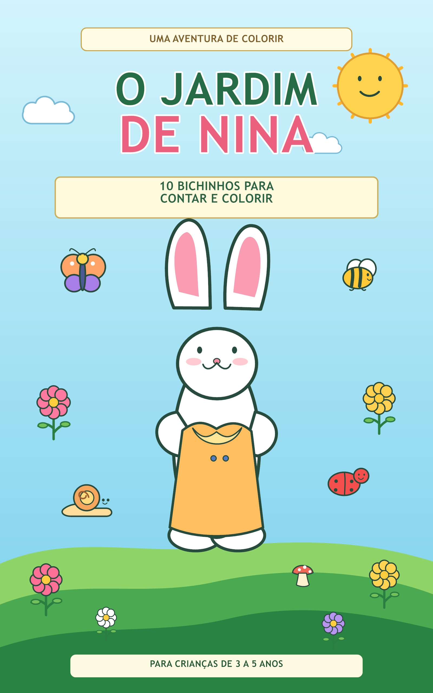

Colorir e imaginar
Ilustrações encantadoras para inventar histórias e explorar as cores.
Um mundo de cores para descobrir
No jardim da Nina, cada bichinho é um novo amigo e cada página convida a imaginar, contar e colorir.

Bem-vindos ao jardim
Com desenhos simpáticos e atividades simples, O Jardim de Nina transforma um momento tranquilo em uma aventura cheia de imaginação. É só pegar os lápis de cor e começar!
Diversão em cada página
Ilustrações encantadoras para inventar histórias e explorar as cores.
Pequenos desafios para observar, contar e descobrir os amigos do jardim.
Uma atividade gostosa para compartilhar momentos criativos em família.
A aventura espera por vocês
Encontre O Jardim de Nina na Amazon e prepare os lápis de cor!
Procurar na Amazon O link abre uma busca pelo título na Amazon Brasil.